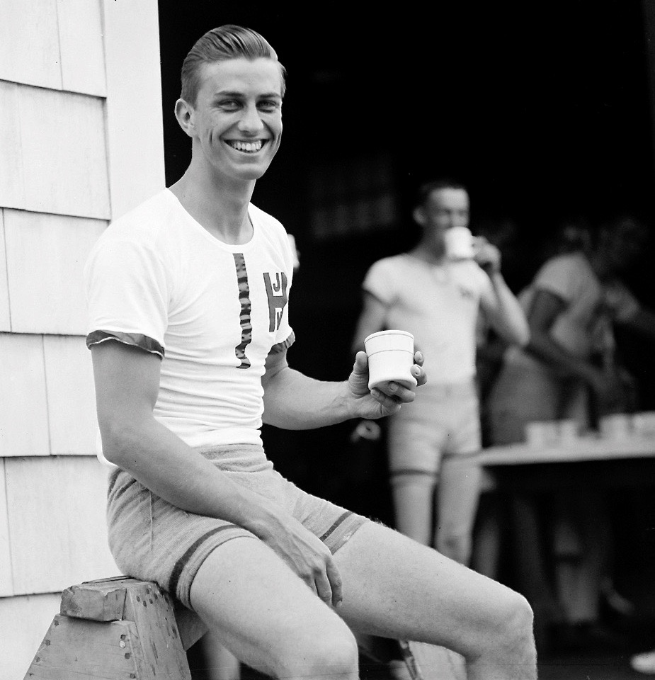

IADS


Rolland Delano
Age: 27
Psyche: Extrovert
Background
- Film producer at independant studios
- Has been in the filming industry for a very short time
- Is not very good at what he does, but he has great ideas in mind
- Has a hectic work schedule
Emotions
Towards Tech
- Generally, acceptive of it. Will adopt new technologies if they seem useful enough for him to get used
to.
- Has the least solvency out of all the other personas.
- Has an overall okay tolerance to computer rage
- Is not very knowledgeable of advanced computing concepts
Towards Company
- Has deep hopes in small businesses as he is part of one
- Prefers companies that are more personal and closer than bigger and distant
Behavior
- Laid back.
- Moderate amount of patience
- Has already been trained by other apps to get to information in the common ways
- Easily distracted.
Expectations
- Pretty straightforward process
- Plug and Play
- Little to no advanced customization
Goals
-
Get an environment that flexible enough to adapt to option volatility
Attitude
-
Generally easygoing and open to change
Motivation
-
Adding another layer of control to an already messy life